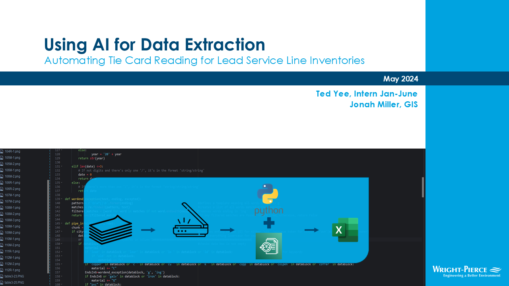

Civil & Environmental Consultants
WATER ENGINEER
Jan 2024 - Jun 2024
Water Engineering with a main project of automating citywide inventories of pipe materials to find lead

The company website for Wright-Pierce
MAIN TASKS
WHAT I SPECIFICALLY DID
Technical Writing
client reports, internal&public memos, & reports and figures, factsheets, technical specifications - WP and massdot (PDR) bid requests creation facility plan, ERP , rra, Risk and Resilience Assessment templatesTechnical Reading
utilities research , rfi, (request for information, reading plant water plans, public research (inverts, water research) contact info policy reading epa, lead, floodproofing public records for mandated EPA inventoryIn-Person Interactions
field work drawdown tests in field, project meetings dpw trip and construction, dave symkawitz, dennis upton, needham, newea and newwa conferences, vendor contact for pump sizing and flow meters, leak detection presnetatiaons new industry presentaitonsEngineering Skills
odor control and buoyancy calcs, discharge calcs for local limits, pump curves, hydraulics plant water modeling, reading plant water plans, cost estimates LSLI, gis/maps fo inventories (maps, checking weird sizesaddresses to send things to), startup invenotries/knowing way around plantMY CONTRIBUTIONS

POLARIS
AUTOMATION AT WRIGHT-PIERCE | 4 MONTHS
One of my main tasks while working at Wright-Pierce Environmental Engineering was to assist municipalities in meeting an EPA mandate about locating lead pipes. As an intern, I led the Polaris project that automated data entry and sorting of public records.
"To automate data entry of handwritten public records"
CHALLENGE


To minimize lead in drinking water, an EPA mandate (CFR40, §141.84) required an inventory of the location and material of every pipe in every water system in the country by Oct 16, 2024

Wright-Pierce was often hired as a consultant to help clients organize and submit their records, but that meant that engineers were spending hours a day reading addresses and pipe info from scanned records
CONTEXT

As part of my university’s Coop Program, I spent January to June of 2024 working with Wright-Pierce Environmental Engineering

Most of my responsibilities there were as a water engineer: bid writing, field tests, plans, calculations etc., but I was able to take on my own project as well. Every municipality had a standard card layout, and by using a handwriting extractor, I had the idea to sort the data we wanted automatically.

Engineers were spending weeks reading thousands of records called ‘tie-cards’ just to copy down pipe size, location, and material and I saw the chance to eliminate the repetition.

With some knowledge of coding and machine learning resources, I set up a process to streamline data entry and processing. I wrote Python scripts to communicate with Amazon Web Services and turn pictures of paper cards into spreadsheets
SOLUTION
We turned to computer-vision models and set up a GUI where Wright-Pierce employees could use company credentials to access an Amazon Web Services (AWS) model that detected handwriting in pdfs. Employees could upload the tie-card scans to AWS Textract via a portal we made, and the data could be reformatted into a spreadsheet

PROCESS
During the process, I taught myself the fundamentals of the Amazon Web Services (AWS) suite and was able to set up an enterprise organization structure with access to Textract.
I only had 6months at Wright-Pierce, so we were not able to fully automate the process. The conversion from .json files to spreadsheets still required manual work to apply the municipality’s layout and without training our own models, the process still required quality control. The project was considered a success and used for both tie-cards and other public-record entry, though variation in card layout remained a large issue.


PRESENTATION
At the end of my coop, I was the only intern to ever give a company-wide presentation, where I pitched the process both for others to use and to defend its worth as an investment. My work was featured in a session at the New England Water Works Association annual conference. Check out the conference proceedings here